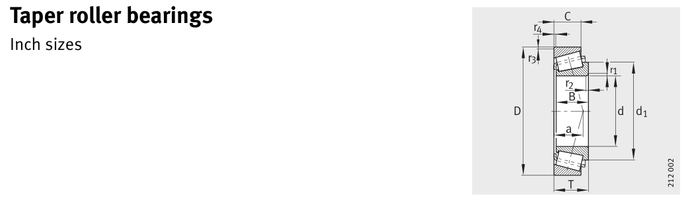

Original catalogue drawing - FAG Schaeffler HR 1, page 494

Scanned from the manufacturer catalogue page listing this part number. All part numbers printed on that table share the same drawing.
Scale cross-section
Blue = inner / outer ring, yellow = rolling element. Drawn to scale from this part's own
dimensions for selection reference only - not a manufacturing or assembly drawing.
Dimension table (mm / inch)
Symbol
Dimension
mm
inch
d
Bore diameter
69.85
2.75
D
Outside diameter
146.05
5.75
B
Inner-ring / bearing width
39.688
1.5625
T
Overall assembly width
41.275
1.625
C
Cup / outer-ring width
25.4
1
Notes
Weights are given in kg. Load ratings are shown in both the original catalogue units and the converted value (1 N = 0.2248 lbf). Data is provided for selection reference only - confirm against the latest official catalogue before ordering.
Main dimensions
Bore d (mm)
69.85
Outside dia. D (mm)
146.05
Width B (mm)
39.688
Overall width T (mm)
41.275
Cup width C (mm)
25.4
Inner-ring OD d1 (mm)
109.4
Load ratings & speeds
Basic dynamic load rating Cr (lbs)
45187
Basic static load rating Cor (lbs)
53729
Basic dynamic load rating Cr (N)
201000
Basic static load rating C0r (N)
239000
Basic dynamic axial rating Ca (N)
5
Fatigue limit load Cur (N)
28500
Factor e
0.78
Factor Y
0.77
Factor Y0
0.42
Limiting speed nG (rpm)
4,800
Effective load centre a (mm)
45
Weight
Weight (kg)
2.96
Mounting dimensions (fillets / shoulders)
Chamfer r2 min (mm)
3.5
Shaft shoulder da (mm)
82
Shaft shoulder db (mm)
95
Housing shoulder Da (mm)
124
Housing shoulder Db (mm)
138
Housing fillet ra max (mm)
3.5
Fillet rb max (mm)
3.3
Bearing life (ISO 281 basic rating life)
C / P
Equivalent load P (N)
L10 (106 rev)
L10h at 1,600 rpm
4
50,250
102
1,058
6
33,500
392
4,089
8
25,125
1,024
10,667
10
20,100
2,154
22,442
15
13,400
8,323
86,703
Basic rating life per ISO 281: L10 = (C/P)10/3 with C = 201,000 N. Hours = L10 x 106 / (60n). Life-modification factors for lubrication, contamination and temperature (aISO) are not included.
Source & traceability
Brand
FAG
Source catalogue
FAG / Schaeffler Rolling Bearings HR 1
Catalogue page
p.494 (dimensions)
Load ratings in newtons, fatigue limit load Cur, limiting speed nG and reference speed nB.
Send us the quantity you need and we will come back with price and
lead time, normally within 24 hours. Equivalent parts from other brands can be quoted at the same time.